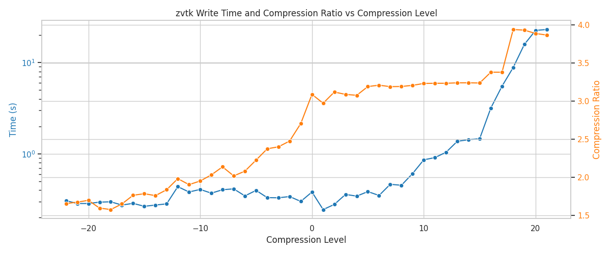
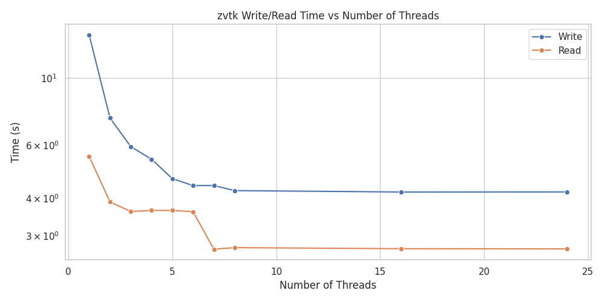
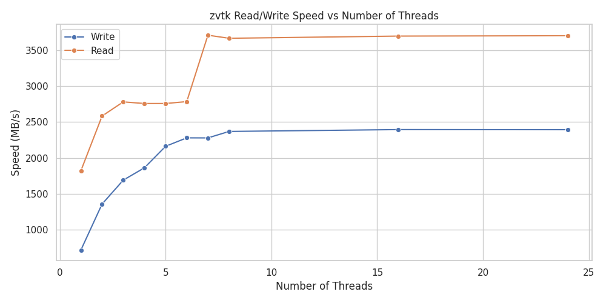

pyvista-zstd Compression and Threading Benchmarks#
These benchmarks evaluate pyvista-zstd performance across multiple compression
levels and varying numbers of threads. A 500 MB
pyvista.UnstructuredGrid was used for compression-level tests, and a
10 GB pyvista.UnstructuredGrid was used for multi-threading
benchmarks.
Compression Level Comparison#

pyvista-zstd write time (log) and compression ratio vs compression level#
Write times increase with higher compression levels, while compression ratios also improve. The plot shows the trade-off between speed and compression.

Read/Write Speed vs. Compression Levels#
Write performance peaks around the default compression level (3), while the read performance is highly dependent on the compression level, approaching the SSD drive speed (6 GB/s).
Note
Note the severely low write speeds using high (15+) levels of compression.
Threading Performance Comparison#

pyvista-zstd write/read time vs number of threads#
Increasing threads significantly reduces write/read times, with diminishing returns beyond 8 threads.

pyvista-zstd write/read speed vs number of threads#
Read and write speed scales with threads; read speeds are generally higher than write speeds for the same number of threads.
Benchmark Script#
The benchmarks were executed using the following Python script:
"""
Compare pyvista-zstd's performance across many compression levels and number of threads.
Size in memory: 6760.66 MB
"""
from __future__ import annotations
from pathlib import Path
import time
import matplotlib.pyplot as plt
import numpy as np
import pandas as pd
import pyvista as pv
import seaborn as sns
from tqdm import tqdm
import pyvista_zstd
sns.set(style="whitegrid")
tmp_dir = Path("/tmp/pyvista_zstd_test")
tmp_dir.mkdir(exist_ok=True)
rng = np.random.default_rng(42)
results = []
# Generate a ~500 MB unstructured grid
n_dim = 127
imdata = pv.ImageData(dimensions=(n_dim, n_dim, n_dim))
ugrid = imdata.to_tetrahedra()
ugrid["pdata"] = rng.random(ugrid.n_points)
ugrid["cdata"] = rng.random(ugrid.n_cells)
nbytes = (
ugrid.points.nbytes
+ ugrid.cell_connectivity.nbytes
+ ugrid.offset.nbytes
+ ugrid.celltypes.nbytes
+ ugrid["pdata"].nbytes
+ ugrid["cdata"].nbytes
)
print(f"Size in memory: {nbytes / 1024**2:.2f} MB")
print()
###############################################################################
tmp_path = Path("/tmp/ds.pv")
pyvista_zstd.write(ugrid, tmp_path)
reader = pyvista_zstd.Reader(tmp_path)
print(reader.show_frame_compression())
###############################################################################
# Compare compression levels
# Negative levels are fast and low compression, 3 is default, and 22 is max
# Compare compression levels (write + read perf)
write_times = []
read_times = []
file_sizes = []
levels = list(range(-22, 22))
n_times = 5
max_time = 20
for level in tqdm(levels):
w_elapsed = []
r_elapsed = []
for _ in range(n_times):
# write
tstart = time.time()
pyvista_zstd.write(ugrid, tmp_path, n_threads=8, level=level)
wtime = time.time() - tstart
w_elapsed.append(wtime)
# read
tstart = time.time()
_ = pyvista_zstd.read(tmp_path, n_threads=8)
rtime = time.time() - tstart
r_elapsed.append(rtime)
if wtime >= 20 and rtime >= 20:
break
write_times.append(np.mean(w_elapsed))
read_times.append(np.mean(r_elapsed))
file_sizes.append(tmp_path.stat().st_size)
# Prepare DataFrame
df = pd.DataFrame(
{
"level": levels,
"write_time_s": write_times,
"read_time_s": read_times,
"file_size_MB": np.array(file_sizes) / 1024**2,
}
)
# Compute compression ratio and speeds
df["compression_ratio"] = nbytes / (df["file_size_MB"] * 1024**2)
df["write_MBps"] = nbytes / (np.array(write_times) * 1024**2)
df["read_MBps"] = nbytes / (np.array(read_times) * 1024**2)
# First figure: time + compression ratio
fig, ax1 = plt.subplots(figsize=(12, 5))
ax1.set_xlabel("Compression Level")
ax1.set_ylabel("Write Time (s)", color="tab:blue")
sns.lineplot(data=df, x="level", y="write_time_s", marker="o", ax=ax1, color="tab:blue")
ax1.set_yscale("log")
ax1.tick_params(axis="y", labelcolor="tab:blue")
ax2 = ax1.twinx()
ax2.set_ylabel("Compression Ratio", color="tab:orange")
sns.lineplot(data=df, x="level", y="compression_ratio", marker="o", ax=ax2, color="tab:orange")
ax2.tick_params(axis="y", labelcolor="tab:orange")
plt.title("pyvista-zstd Write Time (log) and Compression Ratio vs Compression Level")
fig.tight_layout()
plt.show()
# Second figure: throughput (MB/s)
plt.figure(figsize=(12, 5))
sns.lineplot(data=df, x="level", y="write_MBps", marker="o", label="Write")
sns.lineplot(data=df, x="level", y="read_MBps", marker="o", label="Read")
plt.xlabel("Compression Level")
plt.ylabel("Speed (MB/s)")
plt.title("pyvista-zstd Read/Write Speed vs Compression Level")
plt.legend()
plt.tight_layout()
plt.show()
###############################################################################
# Compare performance across number of threads for a large file
# Generate a ~10 GB unstructured grid
n_dim = 342
imdata = pv.ImageData(dimensions=(n_dim, n_dim, n_dim))
ugrid = imdata.to_tetrahedra()
ugrid["pdata"] = rng.random(ugrid.n_points)
ugrid["cdata"] = rng.random(ugrid.n_cells)
nbytes = (
ugrid.points.nbytes
+ ugrid.cell_connectivity.nbytes
+ ugrid.offset.nbytes
+ ugrid.celltypes.nbytes
+ ugrid["pdata"].nbytes
+ ugrid["cdata"].nbytes
)
print(f"Size in memory: {nbytes / 1024**2:.2f} MB")
print()
###############################################################################
# Compare performance vs. n-threads
threads_list = [*list(range(1, 9)), 16, 24]
write_times = []
read_times = []
file_sizes = []
n_times = 5
max_time = 20
compression_level = 3 # fixed level
for n_threads in tqdm(threads_list):
w_elapsed = []
r_elapsed = []
for _ in range(n_times):
# write
tstart = time.time()
pyvista_zstd.write(ugrid, tmp_path, n_threads=n_threads, level=compression_level)
wtime = time.time() - tstart
w_elapsed.append(wtime)
# read
tstart = time.time()
_ = pyvista_zstd.read(tmp_path, n_threads=n_threads)
rtime = time.time() - tstart
r_elapsed.append(rtime)
# allow up to max_time
if wtime >= max_time and rtime >= max_time:
break
write_times.append(np.mean(w_elapsed))
read_times.append(np.mean(r_elapsed))
file_sizes.append(tmp_path.stat().st_size)
# Prepare DataFrame
df = pd.DataFrame(
{
"threads": threads_list,
"write_time_s": write_times,
"read_time_s": read_times,
"file_size_MB": np.array(file_sizes) / 1024**2,
}
)
# Plot write vs read times
plt.figure(figsize=(10, 5))
sns.lineplot(data=df, x="threads", y="write_time_s", marker="o", label="Write")
sns.lineplot(data=df, x="threads", y="read_time_s", marker="o", label="Read")
plt.xlabel("Number of Threads")
plt.ylabel("Time (s)")
plt.yscale("log")
plt.title("pyvista-zstd Write/Read Time vs Number of Threads")
plt.legend()
plt.tight_layout()
plt.show()
# Compute speeds in MB/s
df = pd.DataFrame(
{
"threads": threads_list,
"write_speed_MBps": nbytes / (np.array(write_times) * 1024**2),
"read_speed_MBps": nbytes / (np.array(read_times) * 1024**2),
}
)
# Plot read/write speed vs threads
plt.figure(figsize=(10, 5))
sns.lineplot(data=df, x="threads", y="write_speed_MBps", marker="o", label="Write")
sns.lineplot(data=df, x="threads", y="read_speed_MBps", marker="o", label="Read")
plt.xlabel("Number of Threads")
plt.ylabel("Speed (MB/s)")
plt.title("pyvista-zstd Read/Write Speed vs Number of Threads")
plt.legend()
plt.tight_layout()
plt.show()